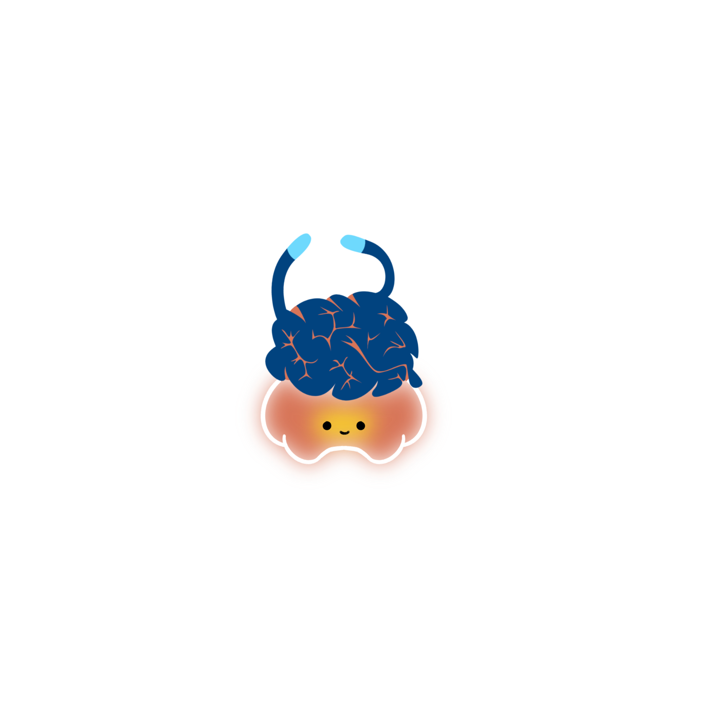

Resources.
How to write a literature review?
This workshop provides students with practical guidance on how to write an effective literature review. You will learn how to organise and critically evaluate academic sources to develop a clear and coherent literature review.
How PsychoPy Lowers Barriers in Psychological Research (MAPSA)
Content to be added...
Publications.
Mah, S. L., & George, P. (2018). A forgetful and angry old lady. Malaysian family physician : the official journal of the Academy of Family Physicians of Malaysia, 13(2), 26–28.
Mah, S. L. Individual and Cultural Differences in Attentional Learning - ProQuest. (2021).
Dawes, C., Quinn, D., Bickerdike, A., O’Neill, C., Granger, K. T., Pereira, S. C., Mah, S. L., Haselgrove, M., Waddington, J. L., O’Tuathaigh, C., & Moran, P. M. (2022). Latent inhibition, aberrant salience, and schizotypy traits in cannabis users. Schizophrenia Research: Cognition, 28, 100235.
Haselgrove, M., & Mah, S. L. (2023). A developmental trajectory of latent inhibition. Journal of Experimental Psychology: Animal Learning and Cognition, 50(3), 186-196.
Mah, S. L., & Haselgrove, M. (2024). A developmental trajectory of latent inhibition. Journal of Experimental Psychology: Animal Learning and Cognition, 50(3), 186–196.
Haselgrove, M., Lagator, S., Mah, S. L., & Gray, E. K. (2025). Novelty mismatch as a determinant of latent inhibition. Journal of Experimental Psychology: Animal Learning and Cognition, 51(1), 13–34.

PsychoPy Tips & Tricks
Save Locally
Always create and save your PsychoPy experiment in a new folder locally (not OneDrive or Google Drive). This prevents path errors and keeps your files organized.
Use Meaningful Names
Use meaningful and unique names for everything:
- Routines: trial, practice_trials, instructions (instead of trial_2, trial_3)
- Loops: trials_loop, practice_loop (instead of loop_2, loop_3)
- Components: word_stim, instruction_text, practice_image (instead of the default text, text_2)
PsychoPy Tips & Tricks
Copy Routine
- Go to Experiment → Copy Routine, then Experiment → Paste Routine.
- Give it a new name when prompted. PsychoPy will add "_2" to the copied components — rename these to meaningful ones right away.
👉 Protip: Press Ctrl + F to search for a component quickly.
“Height” Units
PsychoPy uses height units by default, which scale across different screens:
- 1.0 = full screen height
- 0.5 = half screen height
This makes your task display properly across monitors, laptops, and tablets.
PsychoPy Tips & Tricks
Text Display
PsychoPy uses letterHeight and foregroundColor for text display settings.
- letterHeight = font size
- foregroundColor = font colour
Examples:
textStim = visual.TextStim(win, text='Hello', letterHeight=0.05)
textStim = visual.TextStim(win, text='Hello', foregroundColor='red')
PsychoPy Tips & Tricks
PsychoPy has 3 main windows:
- Builder: where you'll spend most of your time
- Coder: for custom Python code
- Runner: where you'll see the error messages
If your experiment runs smoothly → ✅ Experiment completed
If it crashes → ❌ Exit Code [1]
PsychoPy Error Common Fixes
NameError: name 'variable' is not defined
- Check that "Set every repeat" is selected
- Make sure
$is used where needed - Ensure your variable name matches the Excel header exactly (case-sensitive!)
- Verify the Excel file is attached to your loop and located in the same folder
Syntax Errors (commas, brackets, or quotation marks missing):
- Read the error message carefully — it usually tells you the exact line and type of issue.
PsychoPy Demo
PsychoPy comes with built-in demos of common cognitive tasks.
- Go to Demos → Unpack Demos and save them in a folder (e.g., "My Documents").
- Then go to Demos again — you'll now see a list of ready-to-use examples.
You can also find and adapt tasks from online repositories. Click on the buttons to learn more!
Interested in a PsychoPy Workshop?
Let us know! This workshop is designed for students who want to gain hands-on experience with experimental design and data collection.